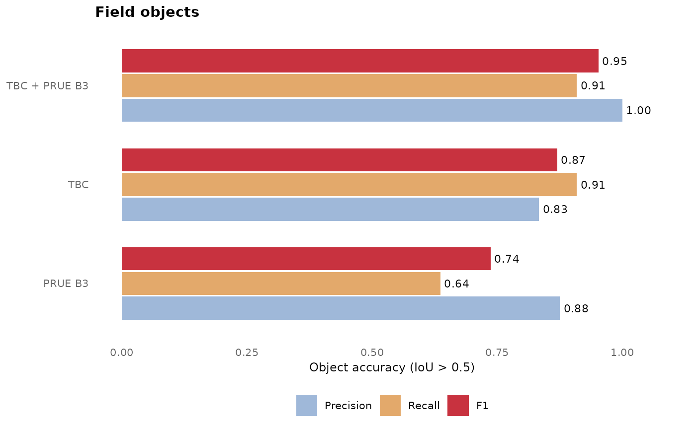
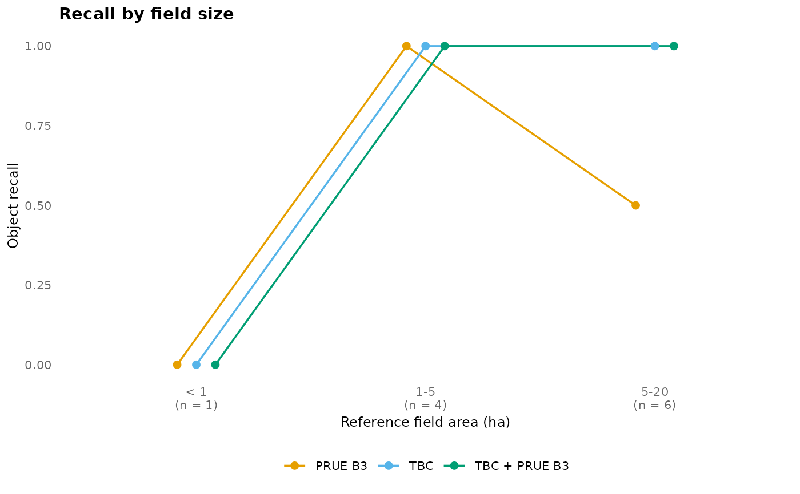

Accuracy of several methods
Arguments
- acc
Output of
fb_accuracy()with amethodcolumn (one row per method).- type
"objects"for object precision, recall and F1, or"size"for the recall of reference fields by size class (classes without reference fields are left out; the axis labels give the number of reference fields, from the first row ofacc).- size_labels
Labels of the size classes (for
type = "size").
Examples
s <- fb_example_stack("california")
f <- fb_example_files("california")
ref <- fb_reference(sf::st_read(f$fields, quiet = TRUE), s)
m <- fb_model_pretrained("california")
fu <- fb_model_pretrained("california", "fusion")
maps <- fb_tbc_maps(s, m)
dl <- fb_read_probabilities(f$prue)
fields <- list(TBC = fb_delineate(maps, thresholds = m$thresholds),
`PRUE B3` = fb_delineate(dl, thresholds = fu$thresholds),
`TBC + PRUE B3` = fb_delineate(fb_fuse(maps, dl, fu), thresholds = fu$thresholds))
ev <- do.call(rbind, lapply(names(fields), function(nm)
cbind(method = nm, fb_evaluate(ref, fields[[nm]]))))
acc <- fb_accuracy(ev, by = "method")
fb_plot_accuracy(acc)

fb_plot_accuracy(acc, type = "size")
